2005 After Burn Report
Welcome
While BRC Census has been producing reports since 2002, it is hard to compare recent data with reports from earlier years (before 2013) because of important differences in methodology, from a convenience sample of self-selected Census takers on-playa to a weighted online survey conducted after the Man burns.
What is your gender?
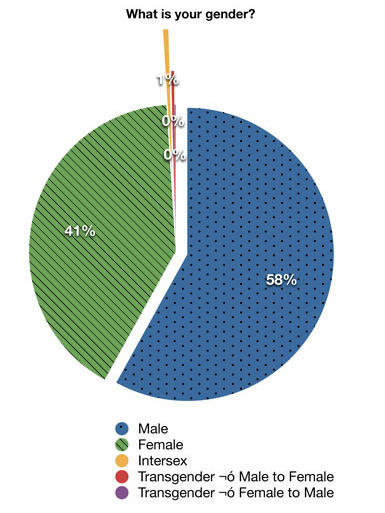
How would you rate your masculine/feminine nature?
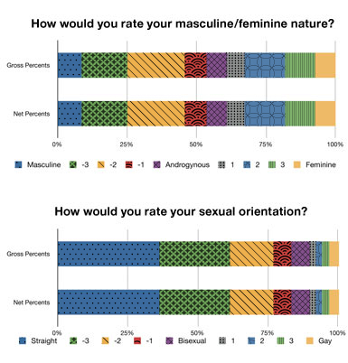
What is the highest level of education you have completed?
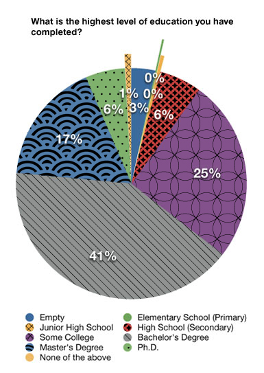
In what kind of area do you currently reside?
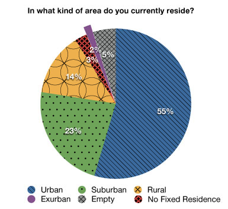
Are you someones dependent? Do you have any dependents?
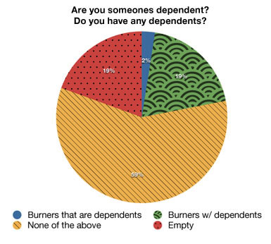
What is your relationship status?
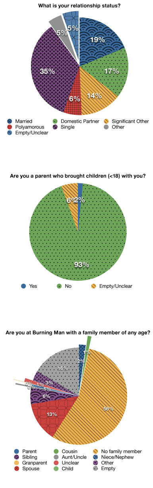
Have you ever “married” at Burning Man?
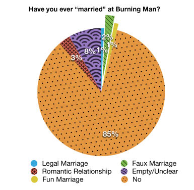
Is Burning Man a spiritual experience for you?
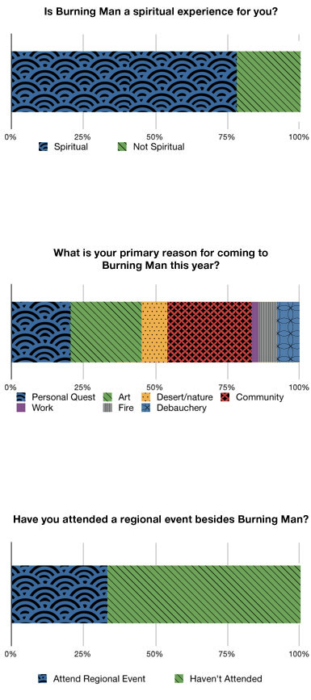
When did you arrive?
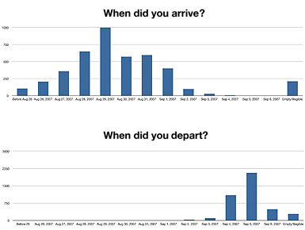
Which of the following years did you attend Burning Man?
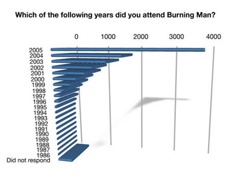
Which year was your favorite?
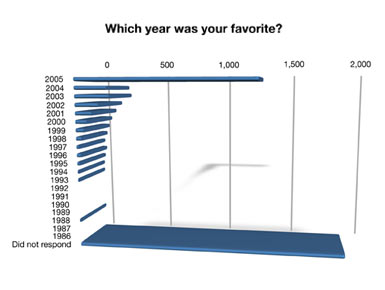
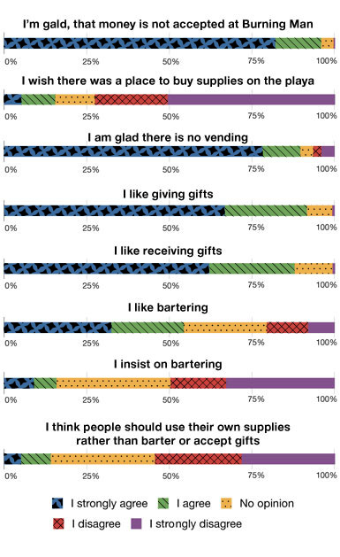
Did you do a solo art project this year?
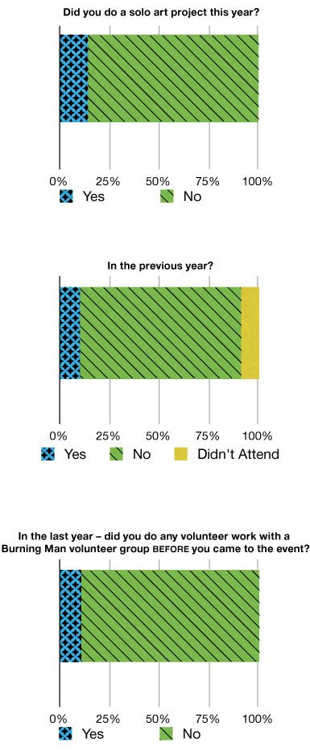
Will you help with a Burning Man volunteer group on the playa this year?
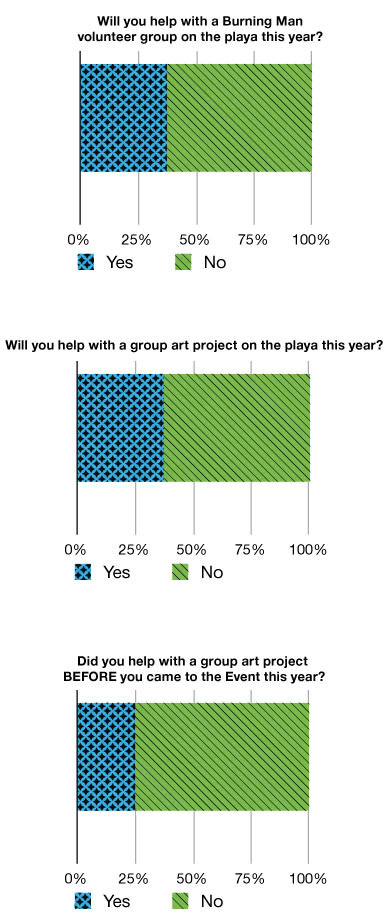
What is your income?
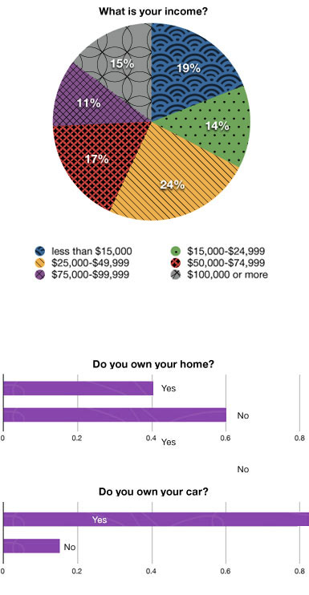
- The average amount spent per ticket:$261.06
- The average amount spent traveling:$410.37
- The average amount spent on supplies:$616.56
- The average amount spent on “fun” supplies:$251.77
- The average amount spent on “other” supplies:$385.94
Did you spend time in Nevada other than for the Burning Man event?
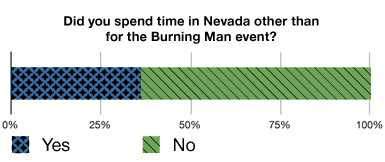
Did you vote in 2004?
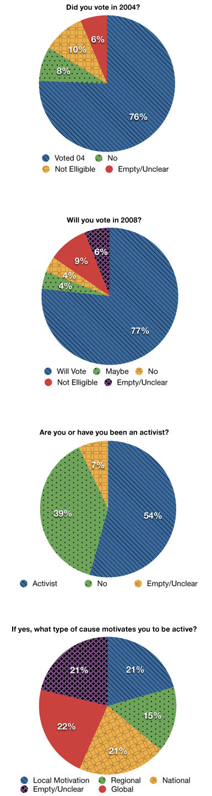